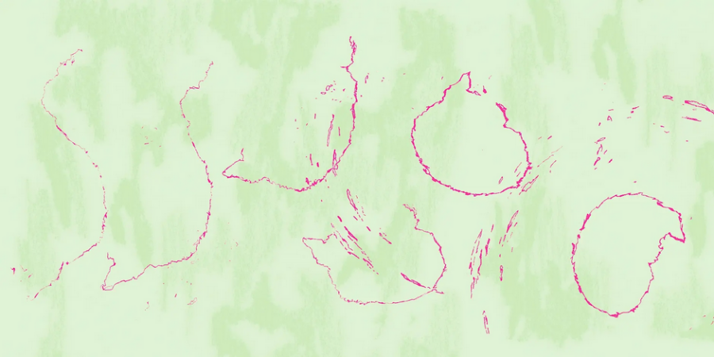

Maya Nguyen: I Hear You Can Make A Helicopter Sound With A Flower
A sound performance related to the exhibition LATERAL ENTRANT, currently on view at the Goethe-Institut Chicago
REGISTER HERE: https://www.eventbrite.com/e/maya-nguyen-i-hear-you-can-make-a-helicopter-sound-with-a-flower-tickets-1987938879703
Join us for a performance by Maya Nguyen related to her exhibition LATERAL ENTRANT, currently on view at the Goethe-Institut Chicago.
At the intersection of foley practice, cinema sound, and meme aesthetics, this performance lecture explores the sonic structure of trauma, Hollywood portrayals of the Vietnam War, and cultural soft power through sound. This work takes as its starting point the iconic helicopter scene from Francis Ford Coppola’s film Apocalypse Now, in which a full-scale U.S. air assault is executed on a Vietnamese village with Wagner’s Ride of the Valkyries (‘Walkürenritt’) playing on loudspeakers. It asks: In a rapidly evolving media environment, how do we depict, listen, and respond to the pain of others?
The performance will last approximately forty minutes, and light refreshments will be served.
ABOUT THE EXHIBITION
Moving between languages, time zones, and visual cultures that connect Vietnam, Germany, and the United States, Nguyen considers translation as a form of arrival. Titled after the German word ‘Quereinsteiger,’ which refers to someone with nontraditional training who transfers into a new professional field, LATERAL ENTRANT is installed throughout the Goethe-Institut Chicago’s space and responds to its environment in an office building. Incorporating video, photography, and performance, this exhibition considers coincidence, misinterpretation, and analogy as tools for investigating both individual biographies and broader experiences of immigration.
Please register in advance and bring a state- or federally-issued photo ID for check-in in the 150 N. Michigan building lobby.